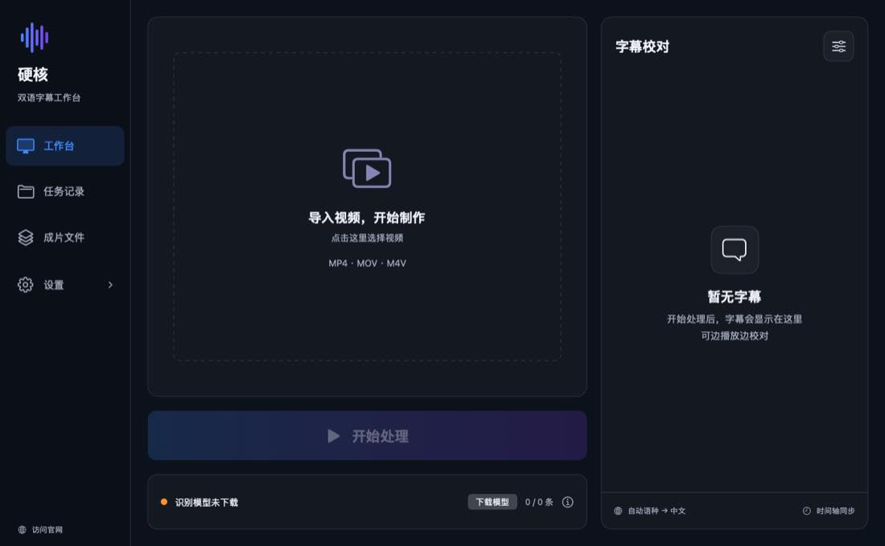
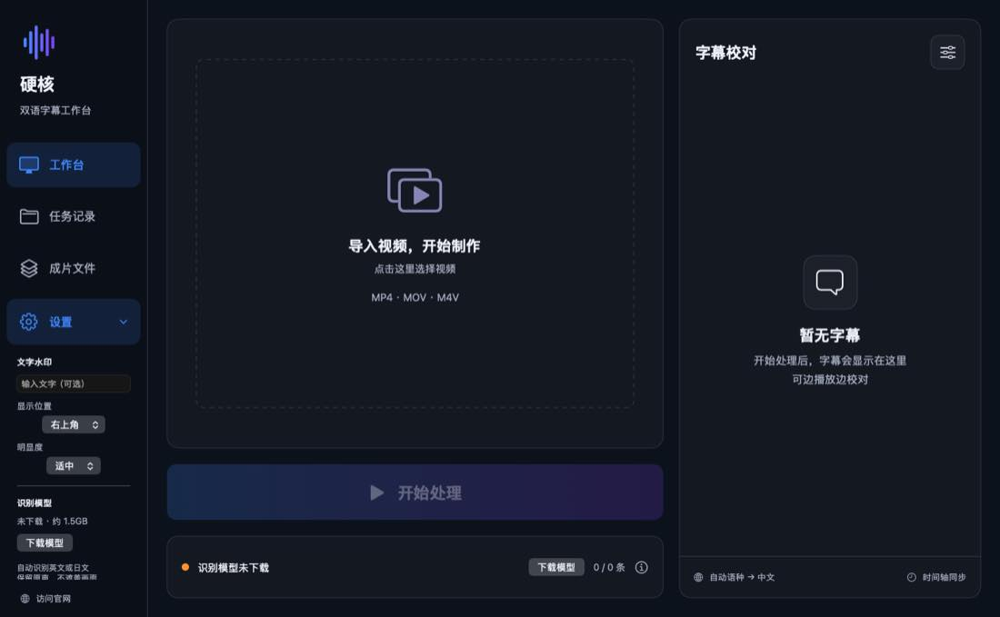

硬核 3.26 · 深色工作台
把视频对白，变成
清楚可靠的双语成片
自动判断英文、日文、语音或画面字幕。画面已有英文时保留英文，只新增中文；没有字幕时生成中英双语。音乐、笑声、掌声与环境音不翻译。
新版界面已同步展示：视频预览、字幕校对、左侧二级设置。网页在线翻译尚未开放；公开下载版本与新版展示的区别，请见下方说明。
✓ 本地识别✓ 保留原声✓ 字幕可校对

与新版 App 同步
把空间留给视频
把空间留给视频
把设置收在左侧
点击导入视频，再点击“开始处理”。字幕集中在右侧校对，水印、位置、明显度和模型设置在左侧展开，不再弹出大窗口挡住预览。

版本说明：以上展示为新版 Build 332。官网当前可下载的仍是 Build 327（旧界面）；新版安装包尚未上传，不会通过旧链接提供。
野生动物素材展示
走近自然，看见野生动物
大象穿过道路 · 约40秒。以下为授权原始素材展示，不是硬核自动翻译成片。
素材：L. Shyamal / Wikimedia Commons，CC0 1.0。播放器从 Wikimedia 加载视频，外部网络可能影响速度。查看来源或无法播放时点这里 · 授权说明
现在的硬核
不是“给所有声音加字幕”
不是“给所有声音加字幕”
而是先理解视频，再决定怎么处理
识别、翻译、字幕编排和视频导出在同一个工作台完成，减少反复切换工具。
识
自动识别内容
自动区分英文、日文，以及语音或画面字幕。语种结果不可靠时停止自动翻译，避免生成错误字幕。
声
只翻译说话
音乐、笑声、掌声、关门声和环境声等非语言内容不翻译、不生成字幕，原视频声音保持不变。
字
识别画面字幕
逐段检查视频已有文字。画面已有英文字幕时不遮挡、不重复嵌入英文，只在合适位置补中文。
帧
保留真实帧率
针对高帧率和可变帧率素材选择合适导出方式，并对输出时长、目标帧时间和实际帧率进行自检。
校
字幕可校对
生成前可修改全文和起止时间；成片与双语 SRT 自动保存，方便继续剪辑或交付。
隐
本地处理优先
语音识别引擎随 App 提供；识别模型首次使用时下载到本机，日常素材无需上传到视频服务器。
实测与自检
“导出成功”还不够
“导出成功”还不够
成片必须能复核
硬核会在导出后检查时长、时间轴与实际帧率。字幕规则另有回归检查，避免修复一个问题又带回旧问题。
✓ 原视频和既有成片始终保留
✓ 高帧率素材不会静默降成 30fps 或 17fps
✓ 英文字幕段与无字幕语音段可在同一视频中分别处理
✓ 识别失败时停止，不用错误结果继续生成
新版 Build 332 开发检查
73项软件回归检查通过
45项安装包内容与结构检查通过
19项布局、无设置弹窗及设置保留检查通过
这些是新版开发检查，不是识别精度或处理速度认证；也不等于另一台 Mac 的完整实机验证。当前公开下载仍是 Build 327。
安装与使用
下载、安装，开始制作字幕
在 App 中一键完成
在 App 中选择视频后，一键完成识别、翻译、成片和 SRT 导出。新版使用“开始处理”按钮，设置在左侧展开；当前公开安装包仍是旧界面 Build 327。
下载 PKG → 双击 → 按“继续、安装”操作。安装器会把 App 放入“应用程序”，无需复制或拖动；系统可能要求这台 Mac 的登录密码或触控 ID 授权。
首次识别需在 App 中点击“下载并启用”，下载约 1.5GB 的模型；系统翻译资源也可能需要下载。本包尚未完成 Developer ID 签名和苹果公证，macOS 仍可能阻止运行。
当前公开下载 · Build 327
下载当前可用版
请注意：这里下载的是旧界面 Build 327，不是上方展示的新版 Build 332。新版安装包尚未上传。
2026-10-20 更新 · 3.26 Build 327。Apple Silicon Mac，macOS 26.4 及以上。补齐应用图标、标准安装向导，并包含字幕延迟修复。
已通过 63 项软件检查、44 项安装包检查；尚未完成另一台干净 Mac 的完整验证。本包未签名公证，系统仍可能阻止运行。请保留原视频并复核成片。
常见问题
开始前需要知道
下载后提示无法验证开发者怎么办？
本包未签名公证。请核对本页来源与安装说明中的 SHA256，只在确认来源可信、文件未被修改时，按 苹果官方说明决定是否允许打开。安装器不会关闭或绕过系统保护；若不能或不愿手动确认，请暂不安装并反馈问题。
别人下载后为什么还需要下载语言模型？
App 内置识别引擎，但约 1.5GB 的识别模型不放在安装包中。首次使用时下载一次，之后保存在本机重复使用；中文翻译也可能需要下载系统语言资源。
视频已经有英文字幕，会被遮住吗？
当前规则不会使用黑色遮盖。系统会保留原画面中的英文字幕，并只新增中文；没有画面字幕的对白段则生成中英双语。
音乐或环境声会不会被翻译？
不会。只有检测为说话内容的片段才进入翻译；音乐、笑声、掌声和环境声不生成字幕。
制作完成后需要校对吗？
建议播放成片，检查字幕内容和声音是否一致。软件提供字幕校对功能，可修改文字和起止时间；请保留原视频。